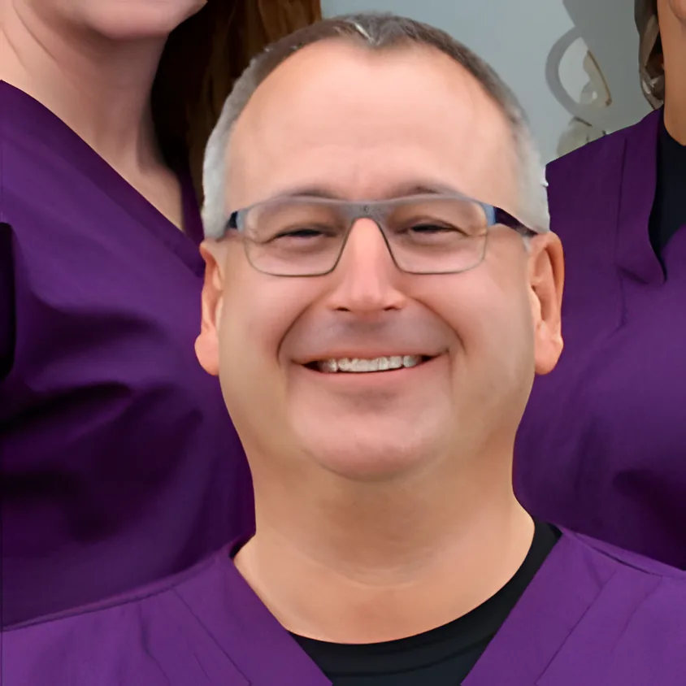

Dr. Mark R. Minichelli
D.M.D. · Family and cosmetic dentistry
Dr. Minichelli was born and raised in Erie and has practiced at 2606 Caughey Road since he graduated in 1990. He practices all phases of family and cosmetic dentistry, and is always accepting new patients.
He lives in Millcreek with his wife and their three children, and enjoys golf, tennis and time with family and friends.
- 1982McDowell High School
- 1986B.S. in Biology, Edinboro University
- 1990D.M.D., University of Pittsburgh School of Dental Medicine
- MemberAmerican Dental Association, Pennsylvania Dental Association, Erie County Dental Association